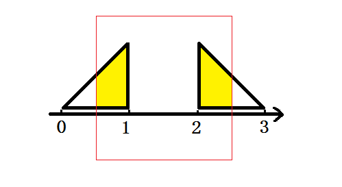

HDU4683. The Sad Triangles
内存限制：4000/2000 MS (Java/Others) 时间限制：65535/32768 K (Java/Others)
题目描述
There are n+m right triangles, some of them are isosceles triangles and the others are all triangles whose longer leg (the sides adjacent to the right angle are called legs) is three times the length of the shorter one. Now we put the triangles on the x>=0, y>=0 part of the plane, and make sure the shorter legs match the x-axis. We call the triangle faces left when the slope of the hypotenuse (the side opposite the right angle is called the hypotenuse) is positive, and the triangle faces right when the slope is negative.
In the first picture, triangle a has a longer leg three times the length of the shorter one, faces right and triangle b is an isosceles triangle, faces left.
Now given the position of each triangle, you need to use a rectangle with L width (the side parallel to x-axis) and limitless height(the side parallel to y-axis) to cover the triangles, if a triangle overlaps with another one, we count the area overlapped only once.
So what's the maximum area can be covered.
It is guaranteed that the x-coordinate of every point is non-negative integer and won't be larger than 100000. We can put the rectangle anywhere.

In the first picture, triangle a has a longer leg three times the length of the shorter one, faces right and triangle b is an isosceles triangle, faces left.
Now given the position of each triangle, you need to use a rectangle with L width (the side parallel to x-axis) and limitless height(the side parallel to y-axis) to cover the triangles, if a triangle overlaps with another one, we count the area overlapped only once.
So what's the maximum area can be covered.
It is guaranteed that the x-coordinate of every point is non-negative integer and won't be larger than 100000. We can put the rectangle anywhere.
输入格式
The first line comes with one integer T (T<15) which denotes the test cases.
In the first line of each case, there are 3 integers n, m , L(1<=n+m<=100000, 1<=L<=100000), indicates there are n triangles faces left and m triangles faces right, and the width of the rectangle is L.In the following n lines describe the triangles face left. Each line contains three integers xi, ki, li, indicates the right angle point is at the position (xi, 0), (0<=xi<=100000) ,the type of the triangle(ki=1 when the triangle is isosceles triangle, ki=3 when the longer leg is three times the length of the shorter one), and the length of the shorter leg.
In the following m lines describe the triangles face right. Each line contains three integers xi, ki, li, which has similar meanings as described above.
Different test cases are separated by a blank line.
In the first line of each case, there are 3 integers n, m , L(1<=n+m<=100000, 1<=L<=100000), indicates there are n triangles faces left and m triangles faces right, and the width of the rectangle is L.In the following n lines describe the triangles face left. Each line contains three integers xi, ki, li, indicates the right angle point is at the position (xi, 0), (0<=xi<=100000) ,the type of the triangle(ki=1 when the triangle is isosceles triangle, ki=3 when the longer leg is three times the length of the shorter one), and the length of the shorter leg.
In the following m lines describe the triangles face right. Each line contains three integers xi, ki, li, which has similar meanings as described above.
Different test cases are separated by a blank line.
输出格式
For each test case, output one line.
First, output "Case #C: ", where C is the number of test case, from 1 to T. Then output the maximum areas that can be covered. The answer should be rounded to 6 digits after the decimal point.
First, output "Case #C: ", where C is the number of test case, from 1 to T. Then output the maximum areas that can be covered. The answer should be rounded to 6 digits after the decimal point.
样例
样例输入
1
1 1 2
1 1 1
2 1 1样例输出
Case #1: 0.750000
Hint

The Second Picture Shows the Sample. The red rectangle covers the yellow area.